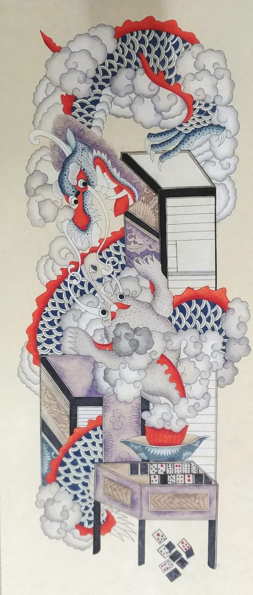
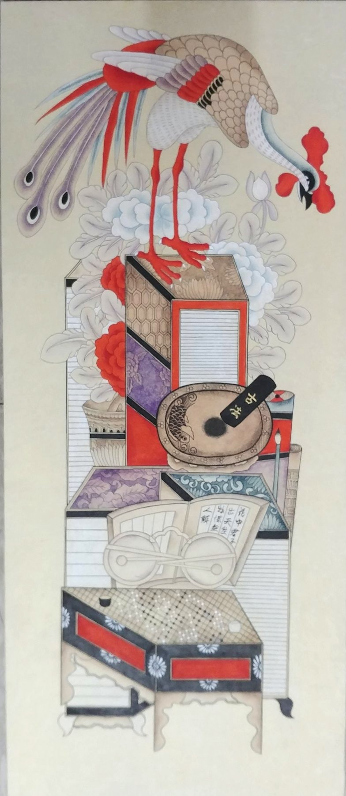

한 폭에는 푸른 용과 흰 용이 구름을 헤치고 솟아오릅니다. 그 아래로 책과 함이 쌓였고, 골패와 주사위가 흩어져 떨어집니다.
다른 한 폭에는 긴 꼬리를 늘어뜨린 봉황이 모란 위로 내려앉습니다. 그 아래에 벼루와 먹, 안경과 책, 문갑이 차례로 놓였습니다.
용은 뜻을 이루고 이름을 떨치기를 뜻합니다. 봉황은 어질고 평화로운 시대에만 나타난다는 상상의 새입니다. 오동나무에만 앉고 대나무 열매만 먹는다 하여 아무 데나 깃들지 않는다고 했으니, 그런 새가 찾아올 만한 집이 되기를 바란 것입니다. 봉은 수컷이고 황은 암컷이라 부부의 화합도 함께 뜻합니다. 아래에 쌓인 책과 문방구는 그 바탕이 배움에 있다는 말입니다.
골패와 주사위는 민간의 해학입니다. 근엄한 책가도에 놀이 도구를 슬쩍 끼워 넣어, 복과 액막이를 함께 바랐습니다.
이 작품 구입을 원하시면 갤러리 데스크로 말씀해 주세요.